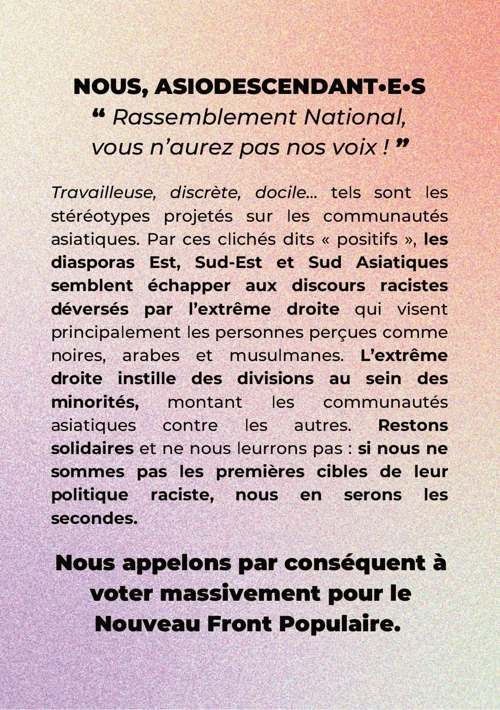

Appel associatif relayé
Des organisations asiodescendantes appellent à voter Nouveau Front populaire
Date indiquée par Facebook · 26 juin 2024
Repères éditoriaux
Nous avons relayé cet appel à refuser l’instrumentalisation du Collectif Vietnam-Dioxine par le Rassemblement national. Le visuel et le texte conservent la voix des organisations à l’origine du message.
Texte conservé avec la publication
Avec d'autres organisations asiatiques de la société civile en France, nous réitérons au Collectif Vietnam-Dioxine, notre volonté de ne pas nous faire instrumentaliser par le Rassemblement National et appelons à voter pour le Nouveau Front Populaire.

Sources
Archive rouge · export Facebook · AR-0002-FB-01344
À lire aussi · Tags antisémites. Une déclaration de Fabien Roussel · Le lien d’origine